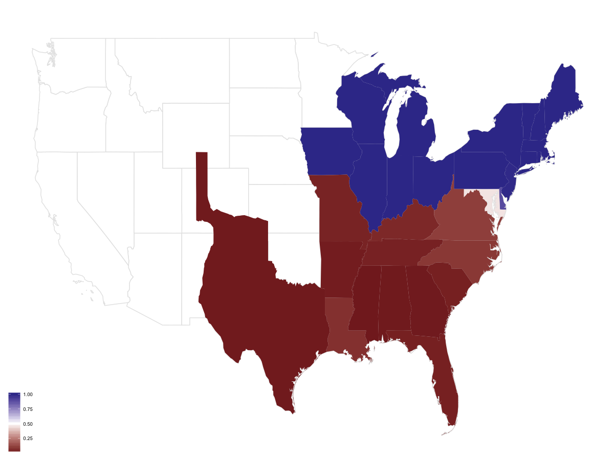
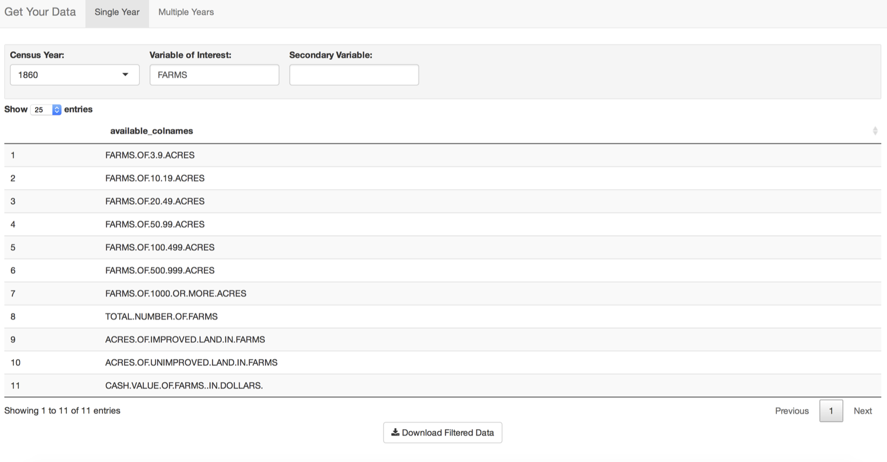
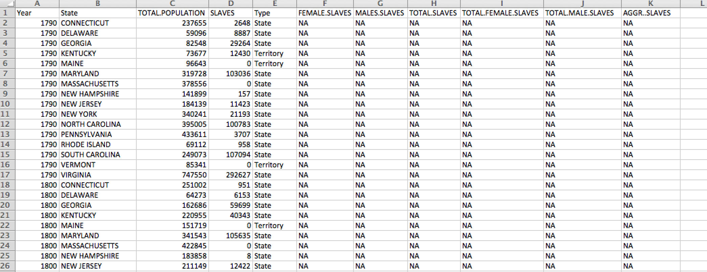
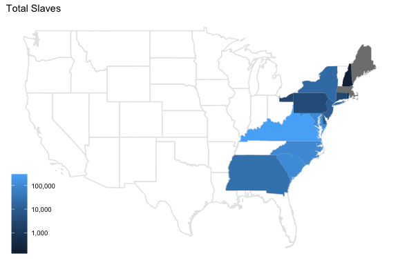
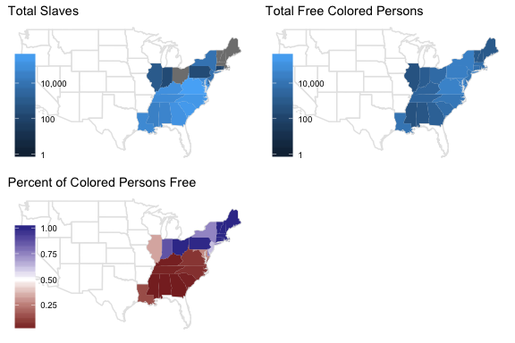
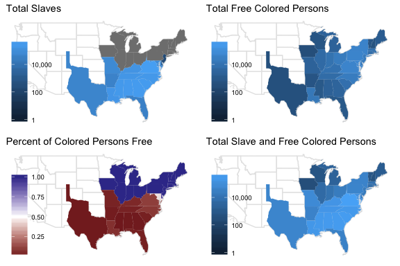

A User-Friendly U.S. Census Browser for R
Kiegan Rice
A User-Friendly U.S. Census Browser for R

Kiegan Rice
Introduction
- The U.S. Decennial Census
- Began in 1790
- “Historical, demographic, economic, and social” information
Introduction

- Statistical Atlases of the U.S. Census
- U.S. Census Office & Francis A. Walker
- 1870 (1874)
- 1880 through 1920
- Power of visualizing census data
Introduction
- Problems with census data
- Change over time
- Variables and nomenclature
- Tracking demographic groups?
Data Access
- University of Virginia Library’s Historical Census Browser
- open to all
- for use in “research, teaching, and personal inquiry”
- aggregated data, state and county level
- removal in December 2016
- county level before December 2016
- What dataset populated this browser?
Data Access
- Inter-University Consortium for Political and Social Research (ICPSR)
- ICPSR 3: 1790 - 1960
- data collections from Census Bureau
- other reports (published & unpublished)
- originally populated HCB
- currently restricted?
- ICPSR 2896: 1790 - 2010
- also included manufacturing
- more county and city-level information
- restricted dataset
Data Access - where can we get this data now?
- University of Virginia redirects to
- Social Explorer
- populated with ICPSR 2896
- paid use, no complete data download offered
- National Historical Geographic Information System (NHGIS)
- difficult to navigate when looking for information across years
Data Access - where can we get this data now?
- ICPSR datasets
- Hosted at University of Michigan’s Institute for Social Research
- requires member institution
- no distribution of information allowed
- no browser function
Data Access - other census data
- Integrated Public Use Microdata Series (IPUMS USA)
- hosted by University of Minnesota
- difficult to navigate
- microsamples on a finer grid, not aggregated data
Data Access - what now?
- Use original Historical Census Browser data
- Host the data and allow free and open access
- Create an intuitive way for users to explore data
- Allow download of all relevant data in ‘tidy’ way
censusbrowseR
- R package
- ‘Get Your Data’ Shiny app
Data Collection
- County-level: None
- State-level: December 2016
- Raw data, copy-pasted
- Saved as csv files
- Separate file for each year, 1790 - 1960
- Missing column names: 1890, 1940
Data Verification
- Using ICPSR 3 data sets
- downloaded from ICPSR, University of Michigan
- Columns from ICPSR compared to each column in raw data
- column with highest correlation
- column with lowest Euclidean distance
- Automated verification
- Correlation > .999 and distance < 100
- Checked by hand
- Correlation > .95 and distance < 5000
- Not all of these were correct
- Unverified
Data Verification

Data Verification
Results of Verification
| 1890 |
37 |
9 |
121 |
167 |
| 1940 |
284 |
3 |
94 |
381 |
- 1890: Large loss of data
- 1940: Fewer losses, marjority verified
“Get Your Data” App
- Shiny app
- Single Year
- Multiple Years
“Get Your Data” App - Single Year

“Get Your Data” App - Multiple Years

Example
- Following the African American population throughout history
- Using the app to find data
- Three major terms: “slave”, “colored”, “negro”
- Note: for remainder of example, “black” will be used instead of “negro”
Example

Example
- “Download Filtered Data” button for each of these terms
- Join the resulting datasets together in R
- Each row is a State-Year combination, with all possible terms as columns

Example
- 1790 data, using TOTAL.SLAVES variable

Example
- 1820 Data, using TOTAL.SLAVES and TOTAL.FREE.COLORED.PERSONS

Example
- 1850 Data, using TOTAL.SLAVES and TOTAL.FREE.COLORED.POPULATION

Example
- Comparing Total Colored Population across years
- different variable names for different years
- 1850:
TOTAL.FREE.COLORED.POPULATION, TOTAL.SLAVES
- 1860:
AGGR..SLAVES, TOTAL.FREE.COLORED.MALES, TOTAL.FREE.COLORED.FEMALES
- 1870:
COLORED.PERSONS
- 1880:
COLORED.PERSONS
Example
- Comparing Total Black Population across years
- different variable names for different years
- 1900:
NEGRO.FEMALES, NEGRO.MALES
- 1910:
TOTAL.NEGROES
- 1920:
MALE.NEGROES, FEMALE.NEGROES
- 1930:
NEGRO.FEMALES, NEGRO.MALES
Discussion
- Connectivity across years
- Well-structured data
- Assess completeness of information for a group
- Quick determination of differences in recording variables
Future Work
- County level data
- Extra challenges with discontinuity across states & counties
- Updated, current data (through 2010) would be valuable
- Including more ‘warnings’ for variables whose nomenclature changes